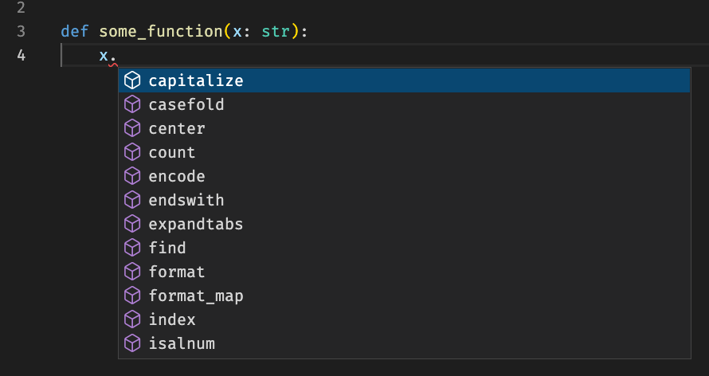

Type annotations
Contents
Type annotations#
In this section we will discuss a fairly new concept in python known as type annotations. This is being used more and more and it is therefore useful to know what type annotations are and how they can be useful. We will only scratch the surface, but cover some core concepts that will make you able to understand and use type annotations in your code.
Dynamic vs static typing#
In python everything is an object. To see this you can take any class and check whether it is a subclass of object using the function issubclass
class A:
pass
print("A: ", issubclass(A, object))
print("int: ", issubclass(int, object))
print("dict: ", issubclass(dict, object))
A: True
int: True
dict: True
However, you probably have at this point a clear model of some of the types in python, e.g integers, floats, strings, lists, dictionaries and so on. In python you can check the type of a variable by use the type function
x = 42
y = "42"
print(f"{type(x) = }")
print(f"{type(y) = }")
type(x) = <class 'int'>
type(y) = <class 'str'>
You can also check if an instance is of a certain type using isinstance
print(f"{isinstance(x, int) = }")
print(f"{isinstance(x, str) = }")
isinstance(x, int) = True
isinstance(x, str) = False
You can also check for several types by passing in a tuple of types as the second argument ot isinstance. The return value will be true if any of the types matches
print(f"{isinstance(x, (str, int)) = }")
isinstance(x, (str, int)) = True
This information about the types are known when the program runs, i.e at runtime. In many other programming languages, such as C++, we need to know this information before the program run, i.e at compile time. Such languages typically use a compiler to translate the source code (i.e the code you write) into machine instructions which is stored in some binary file that you can run. Languages where you need to specify the type before the program runs are called statically typed languages. Static here refers to that once you have declared a variable to have a certain type then it is in general not allowed to change the type. In python, on the other hand there is nothing preventing you from doing this. For example the following code runs without problem
x = "Hello"
x = 42
x += 1
Conversely, a similar program in C++ would not be allowed without explicitly stating that x changes its type.
Python is what is called a dynamically typed language, meaning that the variables can change type during a programs lifetime.
Brief introduction to type annotations#
In PEP484 type hits were introduced to the python language (starting at python version 3.5), allowing developers to add type information to python code. Here is one example
pi: float = 3.142
After the variable name we add a colon (:) and then the type (i.e float), followed by an assignment. In this particular case, it doesn’t add any value to add type information, but we will see examples later where this can be useful.
We can also add type annotations to a function as follows
def circumference(radius: float) -> float:
return 2 * pi * radius
Again, we use : float to indicate the at the argument radius is of type float. To annotate the return type of the function we use the arrow -> followed by the type.
Here is another example
def print_hello(name: str, hello: str = "Hello") -> None:
print(f"{hello} {name}")
This function takes one argument called name of type str and one argument hello of type str. The second argument has a default value of hello, but you could imagine that you would make a French version of this by passing in hello = "Bonjour". This function also returns nothing, and we can indicate this by saying that the return type is None.
Container types#
If you want say that a function expects a list, set, dictionary or tuple then you need to import a special type annotation from the typing module. Consider the following example
from typing import Dict, List
def extract_ages_from_dict(age_dict: Dict[str, int], names: List[str]) -> List[int]:
ages = []
for name in names:
if name in age_dict:
ages.append(age_dict[name])
return ages
names = ["Ken", "Donna", "John"]
age_dict = {"Barbara": 23, "Ken": 43, "Kim": 21, "John": 31, "Donna": 19}
ages = extract_ages_from_dict(age_dict, names)
print(ages)
[43, 19, 31]
Note that we import Dict and List from the typing module, and that we pass the type of the content of the list as an argument using square brackets, e.g List[str] means a list of strings. For dictionaries we have two types, the first begin the type of the keys and the second begin the type of the values, so Dict[str, int] is a dictionary who’s keys are strings and the values are integers.
Note
From python3.9 you can also use the regular types (i.e list, dict etc) in your type annotations, see PEP 585
Union types#
Sometimes, your function can take more than one type of argument. In this case we say that the argument is a union of several types. Consider the following example
import datetime
from typing import Union
def compute_age_this_year(year_born: Union[int, str]) -> int:
this_year = datetime.datetime.now().year
if isinstance(year_born, str):
return this_year - int(year_born)
else:
return this_year - year_born
You can use this function in two ways, either pass an integer
compute_age_this_year(1999)
23
or pass a string
compute_age_this_year("1999")
23
The results should be the same. We can express that year_born can be both of type int and of type str by writing that year_born is of type Union[int, str], where Union is imported from the typing module.
Another common use case is when an argument is either something or None. Consider the following example
from typing import Union
def print_hello(name: str, city: Union[str, None] = None) -> None:
msg = f"Hello {name}"
if city is not None:
msg += f" from {city}"
print(msg)
print_hello("Henrik") # prints 'Hello Henrik'
print_hello("Henrik", "Oslo") # prints 'Hello Henrik from Oslo'
Hello Henrik
Hello Henrik from Oslo
Using None in a union is so common that there is actually a shorthand for this which is Optional. Therefore we can instead write the following equivalent function signature
from typing import Optional
from typing import Union
def print_hello(name: str, city: Optional[str] = None) -> None:
...
i.e Union[str, None] = Optional[str].
Any type#
There is a special type called Any which means that you basically don’t care about the type (i.e it can be anything). One example where such a type would make sense could be the following function
from typing import Any
def stringify(x: Any) -> str:
return str(x)
(You should of course probably just use str directly here instead).
Why do we want types?#
Adding type annotations to the python language was controversial when first proposed. After all, python was designed as dynamically typed language with quite few constraints for the user.
You are not enforced to use type annotations in python and therefore you can still completely ignore them. However, as your program grows and you as a python programmer mature you will see that adding types have several benefits.
Documentation - We have learned that we should write docstring for the functions that we write. However, it is not always the highest priority. Adding types annotation also serves as documentation because it provides information about the types going in an out of the function
Editor support - Modern editors such as Visual Studio Code can use type annotations to provide a better developer experience, by providing tab completion
{kind=link}

Fig. 23 By providing type annotations, editors can provide a better user experience by showing methods and attributes by typing .#
Static type checking - When we add type annotations to our python code we can use something called a static type checker to verify that all types are correctly passed between functions. Later in the course, when we will introduce C++, you will see that type checking is something that a compiler will do for us. A static type checker can actually catch a lot of bugs that normally would require a lot of unit test.
Static type checking with mypy#
The most used tool for performing static type checking is mypy. You can install it with pip
python -m pip install mypy
Once installed you can run it against your code as follows
mypy file.py
where file.py is the file you want to check.
Lets try to run mypy against the following code
# file.py
from typing import Dict, Optional
def extract_name_and_capitalize(data: Dict[str, str]) -> Optional[str]:
name = data.get("name")
if name is None:
return None
return name.capitalize()
person1 = {"name": "henrik", "age": "35", "city": "oslo"}
print(extract_name_and_capitalize(person1)) # prints 'Henrik'
person2 = {"age": "40"}
print(extract_name_and_capitalize(person2)) # prints None
Henrik
None
This output will be
$ mypy file.py
Success: no issues found in 1 source file
Great! Everything looks good. Now let us try a different example with a class. Try to run mypy on this code
import datetime
class Person:
def __init__(self, name, year_born):
self.name = name
self.year_born = year_born
def __repr__(self):
return f"{type(self).__name__}(name={self.name}, year_born={self.year_brn})"
def age_this_year(self):
return datetime.datetime.now().year - self.year
$ mypy file.py
Success: no issues found in 1 source file
Looks like everything is OK. Or is it? No, we forgot to add the type annotations, and in this case all types as treated as Any. Let us add the type annotations
import datetime
class Person:
def __init__(self, name: str, year_born: int) -> None:
self.name = name
self.year_born = year_born
def __repr__(self) -> str:
return f"{type(self).__name__}(name={self.name}, year_born={self.year_burn})"
Note
We do not add type annotations to the self argument. In this case self would be of type Person.
Let us try to run mypy again.
$ mypy file.py
file.py:10: error: "Person" has no attribute "year_burn"; maybe "year_born"?
Found 1 error in 1 file (checked 1 source file)
We see that mypy spotted an error! We “accidentally” misspelled year_born and wrote year_burn. Such a bug might be hard to debug.
You would indeed see bug if you tried to print an instance of Person, i.e
print(Person("Henrik", 1987))
---------------------------------------------------------------------------
AttributeError Traceback (most recent call last)
Cell In [18], line 1
----> 1 print(Person("Henrik", 1987))
Cell In [17], line 10, in Person.__repr__(self)
9 def __repr__(self) -> str:
---> 10 return f"{type(self).__name__}(name={self.name}, year_born={self.year_burn})"
AttributeError: 'Person' object has no attribute 'year_burn'
However, mypy didn’t need to execute any code in order to catch this bug. It did it just by inspecting the type of an instance of Person and noticing that this type has no field or method called year_burn.
Here comes a code with a quite challenging bug. The example used below to run the functions will give the correct output, but the implementation is unstable. Can you find it without running mypy?
from typing import Dict, List, Optional
def extract_name_and_capitalize(data: Dict[str, str]) -> Optional[str]:
name = data.get("name")
if name is None:
return None
return name.capitalize()
def count_letters_in_names(names: List[str]) -> int:
return sum(len(name) for name in names)
data = [
{"name": "henrik"},
{"name": "johannes"},
{"name": "ada"},
]
names = []
for d in data:
name = extract_name_and_capitalize(d)
names.append(name)
print(count_letters_in_names(names))
17
If you don’t understand the bug, please come an ask me in the lecture and I will be happy to explain it.
Want to learn more?#
Check out the Python type checking guide from realpython.com.